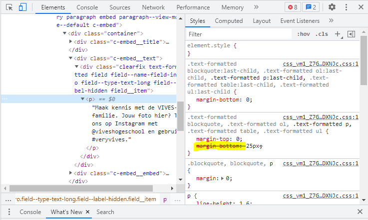
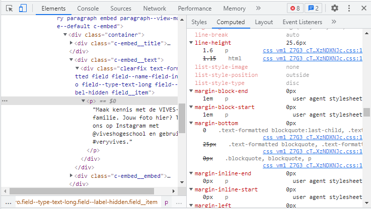

Opdracht 01
- Op onderstaande foto kun je zien dat er verschillende dingen doorstreept zijn. Het betekent dat de doorgestreepte stijl is toegepast, maar vervolgens overschreven door een meer specifieke selector, een meer lokale regel of door een latere eigenschap binnen dezelfde regel. Hier is het de "margin-bottom" die doorstreept is, je kunt zien dat erboven de "margin-bottom" al gedefinieert is.
- Grijze tekst kan 2 dingen betekenen: ofwel is het een standaardregel die de browser toepast, incl. steno-eigenschappen.Dat zijn eigenschappen die u in staat stellen om de waarden van verscheidene andere CSS-eigenschappen gelijktijdig in te stellen.
- Op de tweede afbeelding kun je de Computed Style panel of the element inspector zien.

